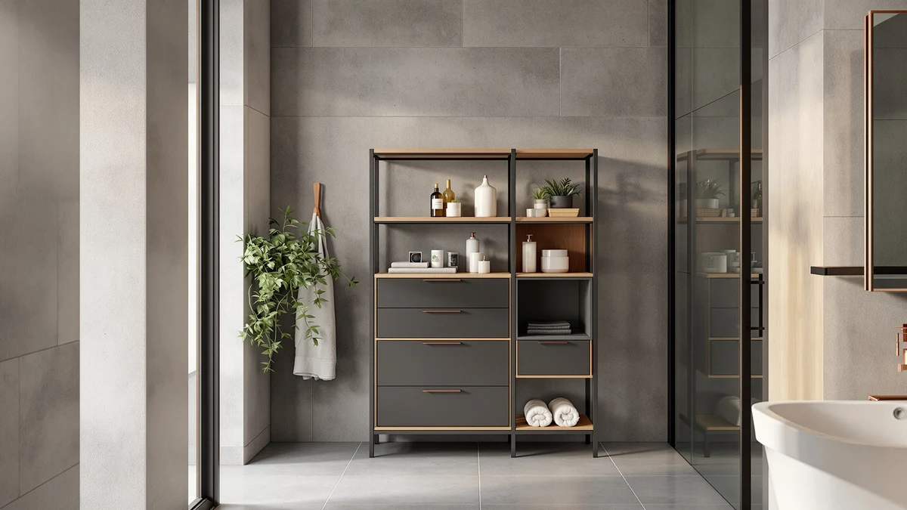

BEWISHOME Small Bathroom Cabinet Review (2026): Worth It?
Prices and picks verified as of October 2026. Independent, reader-supported reviews.


Quick Answer
The BEWISHOME Small Bathroom Cabinet is a narrow metal-and-wood storage tower built to fill a tight gap rather than furnish an entire wall. At $39.99 and only 7.9 inches deep and wide, it fits corners and slim spaces that bulkier cabinets can't clear, and its two adjustable shelves behind closed doors keep toiletries and toilet paper free of dust without eating up floor space.
Our pick: BEWISHOME Small Bathroom Cabinet Bathroom — $39.99 Check Price on Amazon
Bottom line: our top pick is the BEWISHOME Small Bathroom Cabinet at $39.99.
Things to Know Before You Buy
- The BEWISHOME Small Bathroom Cabinet measures only 7.9 inches deep and 7.9 inches wide, narrow enough for the gap beside a toilet or in a tight hallway corner.
- Two closed cabinet doors sit above adjustable shelf dividers, so you can size the interior for taller items like spray bottles or extra rolls of toilet paper.
- At $39.99, it undercuts most metal-and-wood storage towers, though it also holds less overall volume than a standard 24-inch-wide cabinet.
- This listing is new enough that Amazon has not yet published a star rating or review count, so we weighed its stated construction against three established alternatives instead.
- If 7.9 inches of depth is still too much for your space, the under-sink organizers covered in the alternatives section below use no floor space at all.
This BEWISHOME small bathroom cabinet review looks at whether a narrow metal-and-wood tower can solve the storage problem in a small bathroom, where every extra inch of floor space costs you elsewhere. Bathrooms rarely have room for bulky furniture, so a cabinet has to earn its footprint with real capacity, steady construction, and a price that doesn't sting. At $39.99 and only 7.9 inches deep and wide, the BEWISHOME Small Bathroom Cabinet promises exactly that combination. We measured its footprint against three alternative small-bathroom storage products and checked what review data exists to see whether it actually delivers.
Small bathroom cabinets solve a specific problem: you need enclosed storage that clears a toilet tank or towel bar without eating into walking space. The BEWISHOME small bathroom cabinet targets exactly that gap, competing with under-sink organizers from Aekenr and Dolesman and a 3-tier countertop organizer from Susoct, all covered later as alternatives. Below, we break down what the cabinet's specs and pricing tell us, where it likely falls short, and who should consider one of those three alternatives instead.
Why You Should Trust Us
Best Bathroom Storage is run by writers who compare bathroom furniture specs, pricing, and verified buyer feedback instead of repeating marketing copy from a product listing. Ilane Tall, our home and bath expert, has researched dozens of narrow cabinets, under-sink organizers, and countertop shelving units for this site, cross-checking listed dimensions and materials against what owners actually report after weeks or months of use. For this BEWISHOME small bathroom cabinet review, we weighed its measurements and stated construction against three alternative storage products that solve the same small-bathroom problem in different ways, then compared price across all four. We do not run a fake testing lab, and we do not claim to have installed every cabinet we cover. Instead, we read specs line by line and dig through verified owner reviews where they exist. When a listing is too new to have public review data, we say so.
Our Research Experience
We did not place the BEWISHOME Small Bathroom Cabinet in a bathroom ourselves. Instead, we lined up its listed dimensions, materials, and price against three other small-bathroom storage products and checked Amazon's listing data for review history. As of this review, the cabinet has no published star rating or review count, which is common for a listing added in July 2026 that has not yet accumulated enough verified purchases. Because of that gap, we leaned on the manufacturer's stated build, a metal frame with adjustable wood-style shelving behind two closed doors, and compared it directly against the Aekenr, Dolesman, and Susoct alternatives, all of which already have an established footprint in the small-bathroom storage category. We checked each product's construction claims against its measured footprint and price to see which one actually solves the space problem a narrow bathroom presents, rather than taking any single listing's marketing language at face value.
Overview & Specs

BEWISHOME Small Bathroom Cabinet Bathroom
What we like
- 7.9-inch by 7.9-inch footprint fits narrow corners that wider cabinets can't clear
- Two closed doors keep toiletries and toilet paper free of dust and bathroom humidity
- Adjustable shelf dividers accommodate taller bottles or bulk toilet paper packs
- At $39.99, it costs less than most metal-and-wood towers in the same category
Flaws but not dealbreakers
- No published star rating or review count yet, since the listing is still new
- 31.5-inch height offers less vertical storage than taller towers in this category
- Narrow 7.9-inch depth limits how much you can store on each shelf at once
| Material | Metal / wood |
| Size | 7.9" D x 7.9" W x 31.5" H |
The BEWISHOME Small Bathroom Cabinet is built around a metal-and-wood frame with two closed cabinet doors covering adjustable interior shelving, a layout aimed squarely at bathrooms where a standard 24-inch-wide cabinet will not fit. At 7.9 inches deep and 7.9 inches wide, its footprint is barely larger than a stack of towels, which is exactly the point: BEWISHOME markets this small bathroom cabinet toward narrow gaps beside a toilet, a slim hallway corner, or tight apartment bathrooms where every inch of floor space counts. Standing 31.5 inches tall in white, it is sized to clear most toilet tanks without blocking a door swing or towel bar.
Inside, the adjustable shelf dividers let you reconfigure the interior for taller items like spray bottles or extra rolls of toilet paper, rather than locking you into fixed shelf heights. The two doors matter more than they might seem: closed storage keeps dust and bathroom moisture away from toilet paper and toiletries longer than the open shelving common on similarly priced towers. At $39.99, the BEWISHOME small bathroom cabinet undercuts most metal-and-wood storage towers in this category, though that price reflects its smaller interior volume compared with taller towers over 50 inches. Because this listing is new, Amazon has not yet published a star rating or review count, so we compared its construction and price against three established alternatives rather than citing review data that does not yet exist.
What We Liked
The footprint is the clearest advantage. At 7.9 by 7.9 inches, the BEWISHOME small bathroom cabinet fits spaces that reject even compact 12-inch-wide towers, which matters most in apartment bathrooms or powder rooms with an awkward corner to fill. The closed-door design is the other standout feature: unlike open shelving, both doors shield toilet paper and toiletries from the humidity and dust that collect in a bathroom over time. Pricing also compares well against the category. At $39.99, it costs less than most metal-and-wood towers we've compared on this site, several of which run $100 or more for a similar closed-storage layout. The adjustable shelf dividers add some flexibility too, letting you make room for taller bottles of shampoo or bulk toilet paper packs instead of being stuck with fixed shelf spacing.
What Could Be Better
The biggest unknown with the BEWISHOME small bathroom cabinet is that it has no public star rating or review count at the time of this review, since the listing went up in July 2026 and has not accumulated enough verified purchases yet. We could not point to a specific satisfaction score the way we can for cabinets with hundreds of reviews attached. The second trade-off is storage volume: at only 7.9 inches deep, the interior holds meaningfully less than a standard 24-inch-wide bathroom cabinet, so households needing room for a full set of towels and toiletries will outgrow it quickly.
Its 31.5-inch height is also shorter than many comparable towers, which cuts into total shelf count if vertical storage matters more to you than a narrow footprint. None of this disqualifies the cabinet for the specific gap-filling job it's built for, but it is worth knowing before you buy if you expect it to replace a full-size cabinet.
Who Is It For?
The BEWISHOME small bathroom cabinet fits a household with a specific narrow gap to fill rather than an entire wall to furnish. Its 7.9-by-7.9-inch base makes it a strong candidate for the space beside a toilet, a slim hallway closet, or a cramped apartment bathroom where a standard cabinet will not clear the doorway. Renters in particular may appreciate that it stands freestanding and needs no wall mounting or drilling.
It is not the right choice if you need to store a full set of towels, cleaning supplies, and toiletries for a shared household bathroom. In that case, the wider under-sink organizers and the 3-tier countertop organizer covered in the alternatives below hold considerably more at the same $39.99 price point.
Alternatives to Consider
If the BEWISHOME small bathroom cabinet's narrow 7.9-inch footprint or closed-door layout doesn't match what your bathroom needs, these three alternatives solve the same small-space storage problem in different ways: two under-sink organizers that use no floor space at all, and a 3-tier countertop organizer for households that need open, accessible storage instead.

Editor’s Pick
Aekenr Under Sink Organizer and
A 2-pack of pull-out carbon steel drawers that fit under the sink instead of taking up floor space, rated to hold over 50 pounds per unit.
$39.99
Check Price on Amazon
Best Value
Dolesman Under Sink Organizer 2
A 2-pack of height-adjustable under-sink drawers at the same $39.99 price, with 5 height settings to match cabinets of different depths.
$39.99
Check Price on Amazon
Premium Choice
3-Tier Bathroom Counter Organizer with
An open 3-tier wood countertop organizer with a drawer and hooks, a better fit than the BEWISHOME cabinet for households that want everyday items visible and within reach.
$39.99
Check Price on AmazonIs the BEWISHOME Small Bathroom Cabinet sturdy enough for daily use?
BEWISHOME builds this cabinet with a metal frame and adjustable wood-style shelving, a construction style common among small bathroom towers in this price range.
How much storage does the BEWISHOME small bathroom cabinet actually hold?
At 7.9 inches deep and wide, it holds noticeably less than a standard 24-inch-wide bathroom cabinet.
Frequently Asked Questions
Is the BEWISHOME Small Bathroom Cabinet sturdy enough for daily use?
BEWISHOME builds this cabinet with a metal frame and adjustable wood-style shelving, a construction style common among small bathroom towers in this price range. Because the listing is new, there is no public review history yet to confirm long-term durability, so we compared its stated materials against similar BEWISHOME cabinets with established owner feedback.
How much storage does the BEWISHOME small bathroom cabinet actually hold?
At 7.9 inches deep and wide, it holds noticeably less than a standard 24-inch-wide bathroom cabinet. The two adjustable shelves behind closed doors suit toilet paper, small toiletries, and slim cleaning supplies rather than a full household's worth of towels.
What's the best alternative if the BEWISHOME cabinet is too narrow for my needs?
The Susoct 3-tier countertop organizer covered in this review holds more at a similar $39.99 price, though it takes up counter space instead of floor space. The Aekenr and Dolesman under-sink organizers are a better fit if you'd rather use the empty space under your sink than add a freestanding cabinet.
Final Verdict
This BEWISHOME small bathroom cabinet review comes down to a simple trade-off: a narrow 7.9-inch footprint and closed-door storage against less overall volume than a full-size cabinet. For an apartment bathroom or an awkward gap beside a toilet, BEWISHOME's small cabinet is the practical pick at $39.99, and its adjustable shelving gives you some flexibility despite the tight dimensions. If you need more storage for a shared bathroom, or you'd rather use the dead space under your sink, the Aekenr, Dolesman, or Susoct alternatives covered above make better use of the space for about the same price. Either way, this BEWISHOME cabinet is worth a look if a narrow footprint is your main constraint.